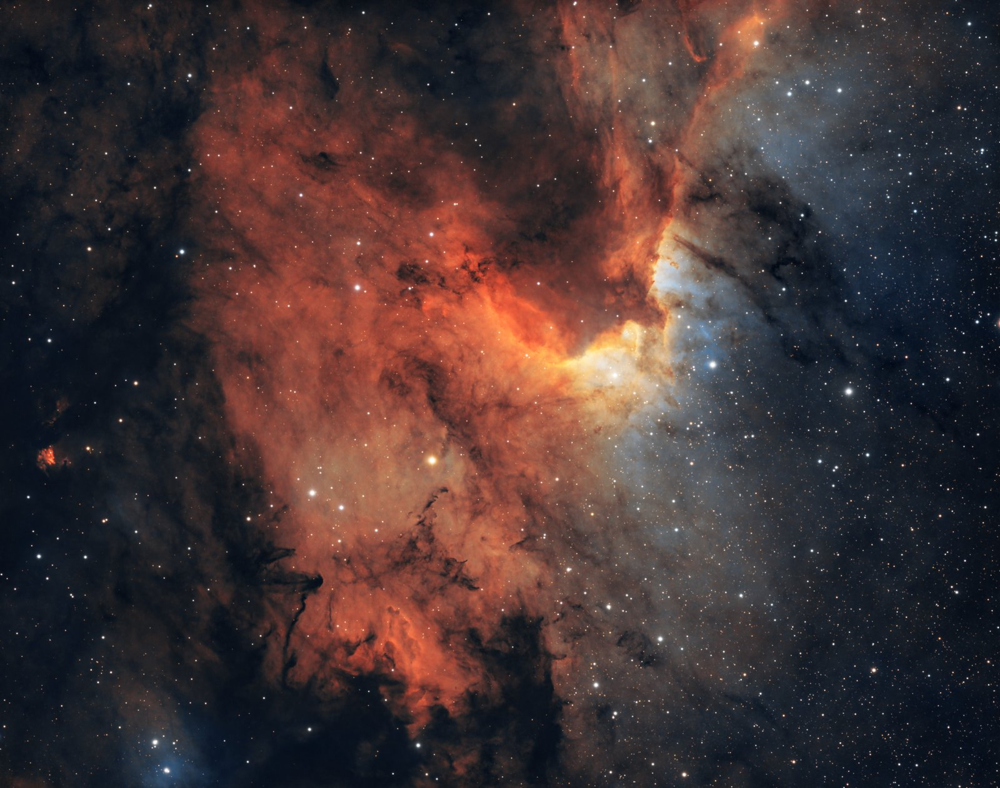

Jerry Fernandes Medeiros
Independent researcher, Calgary, Alberta
I run All-Sky Lab on my own, without an institutional affiliation. The work started with a practical question from imaging the sky under Calgary's light-polluted suburbs: how many usable nights does a Canadian city actually get, and can the public records answer that? Answering it meant first checking those records, which is how the cloud-report paper came about, and then the observing-nights and sky-brightness papers.
I am an amateur astrophotographer and a member of the Calgary Centre of the Royal Astronomical Society of Canada (RASC). Imaging is still where most of the questions come from: every clear night that turns out to be hazy, smoky, or brighter than it should be is a small measurement problem. More of my images are on Instagram.

My background is in computer science. My master's research at the Universidade Federal do Estado do Rio de Janeiro (UNIRIO) was on automatically categorising web text using Wikipedia, and my earlier papers were in educational technology and exploratory search. I also hold an MBA from Fundação Getulio Vargas. That background shapes how I work: large public datasets, careful handling of where each record comes from, and analysis that anyone can rerun.
Every paper here ships with its code and data on Zenodo, and every number in it can be rebuilt from that release. I am glad to hear from anyone who finds a problem in the work, wants to use the data, or is interested in collaborating.
Earlier publications
- 2020 ‘A Little Knowledge is a Dangerous Thing’: a method to automatically detect knowledge compartmentalization and oversimplification. IEEE ICALT 2020.
- 2019 How complex is the complexity of a concept in exploratory search. IEEE ICALT 2019.
- 2018 TagTheWeb: using Wikipedia categories to automatically categorize resources on the web. Lecture Notes in Computer Science.